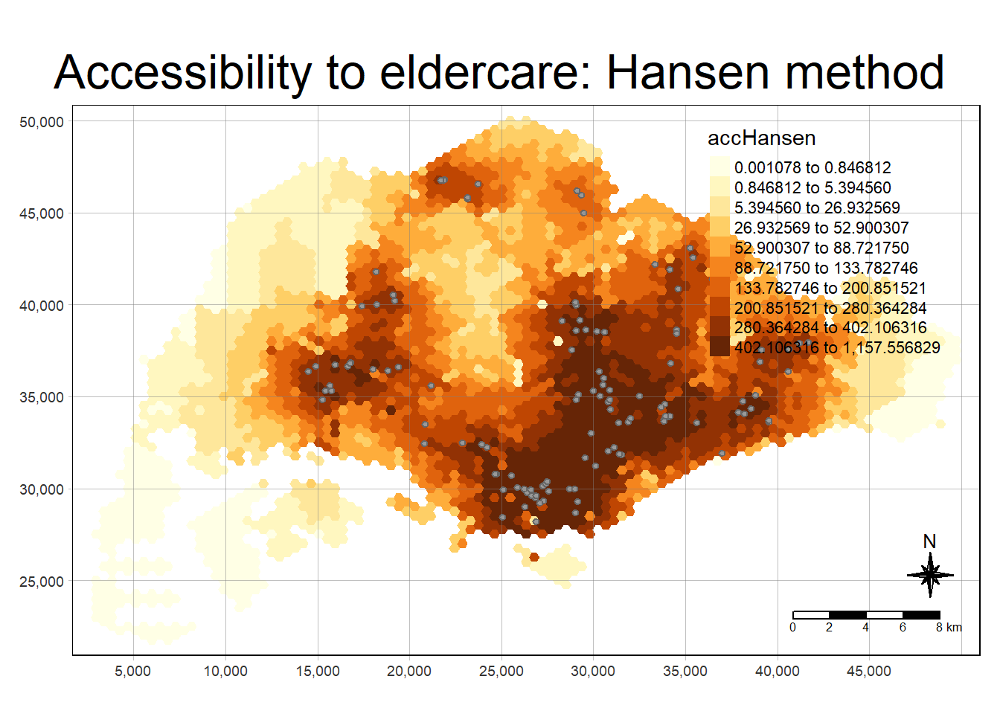
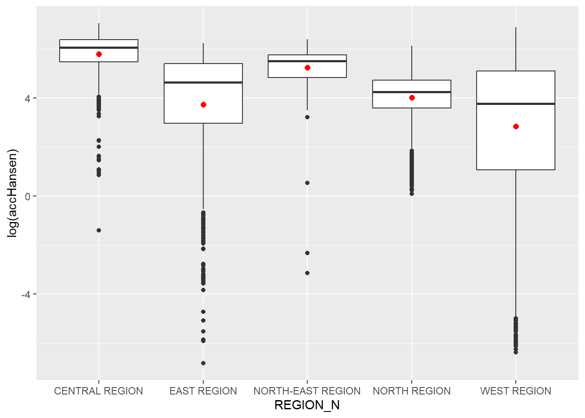
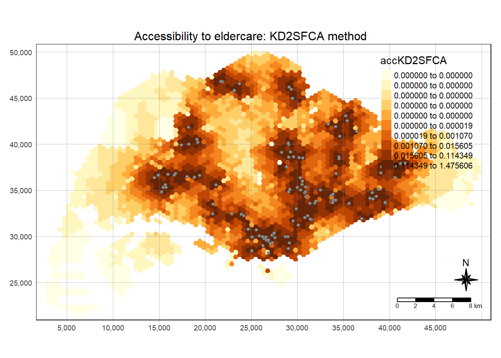
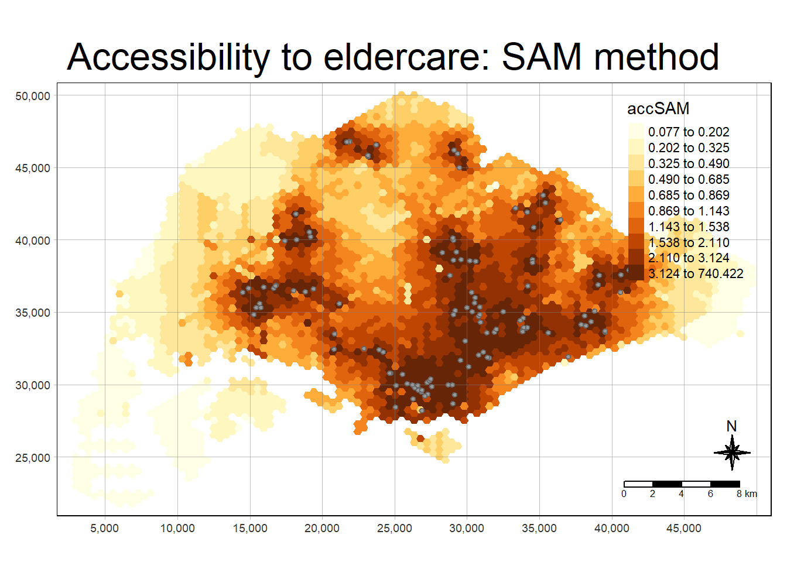

pacman::p_load(tmap, SpatialAcc, sf,
ggstatsplot, reshape2,
tidyverse)Hands-on Exercise 9
Modelling Geographical Accessibility
1 Getting Started
1.1 Load and Install R Packages
2 Geospatial Data Wrangling
2.1 Importing Geospatial Data
mpsz <- st_read(dsn = "data/geospatial", layer = "MP14_SUBZONE_NO_SEA_PL")Reading layer `MP14_SUBZONE_NO_SEA_PL' from data source
`C:\brigittatsai\ISSS626_AY2024-25_T1\Hands-on_Ex\Hands-on_Ex09\data\geospatial'
using driver `ESRI Shapefile'
Simple feature collection with 323 features and 15 fields
Geometry type: MULTIPOLYGON
Dimension: XY
Bounding box: xmin: 2667.538 ymin: 15748.72 xmax: 56396.44 ymax: 50256.33
Projected CRS: SVY21hexagons <- st_read(dsn = "data/geospatial", layer = "hexagons") Reading layer `hexagons' from data source
`C:\brigittatsai\ISSS626_AY2024-25_T1\Hands-on_Ex\Hands-on_Ex09\data\geospatial'
using driver `ESRI Shapefile'
Simple feature collection with 3125 features and 6 fields
Geometry type: POLYGON
Dimension: XY
Bounding box: xmin: 2667.538 ymin: 21506.33 xmax: 50010.26 ymax: 50256.33
Projected CRS: SVY21 / Singapore TMeldercare <- st_read(dsn = "data/geospatial", layer = "ELDERCARE")Reading layer `ELDERCARE' from data source
`C:\brigittatsai\ISSS626_AY2024-25_T1\Hands-on_Ex\Hands-on_Ex09\data\geospatial'
using driver `ESRI Shapefile'
Simple feature collection with 120 features and 19 fields
Geometry type: POINT
Dimension: XY
Bounding box: xmin: 14481.92 ymin: 28218.43 xmax: 41665.14 ymax: 46804.9
Projected CRS: SVY21 / Singapore TM2.2 Updating CRS Information
mpsz <- st_transform(mpsz, 3414)
eldercare <- st_transform(eldercare, 3414)
hexagons <- st_transform(hexagons, 3414)st_crs(mpsz)Coordinate Reference System:
User input: EPSG:3414
wkt:
PROJCRS["SVY21 / Singapore TM",
BASEGEOGCRS["SVY21",
DATUM["SVY21",
ELLIPSOID["WGS 84",6378137,298.257223563,
LENGTHUNIT["metre",1]]],
PRIMEM["Greenwich",0,
ANGLEUNIT["degree",0.0174532925199433]],
ID["EPSG",4757]],
CONVERSION["Singapore Transverse Mercator",
METHOD["Transverse Mercator",
ID["EPSG",9807]],
PARAMETER["Latitude of natural origin",1.36666666666667,
ANGLEUNIT["degree",0.0174532925199433],
ID["EPSG",8801]],
PARAMETER["Longitude of natural origin",103.833333333333,
ANGLEUNIT["degree",0.0174532925199433],
ID["EPSG",8802]],
PARAMETER["Scale factor at natural origin",1,
SCALEUNIT["unity",1],
ID["EPSG",8805]],
PARAMETER["False easting",28001.642,
LENGTHUNIT["metre",1],
ID["EPSG",8806]],
PARAMETER["False northing",38744.572,
LENGTHUNIT["metre",1],
ID["EPSG",8807]]],
CS[Cartesian,2],
AXIS["northing (N)",north,
ORDER[1],
LENGTHUNIT["metre",1]],
AXIS["easting (E)",east,
ORDER[2],
LENGTHUNIT["metre",1]],
USAGE[
SCOPE["Cadastre, engineering survey, topographic mapping."],
AREA["Singapore - onshore and offshore."],
BBOX[1.13,103.59,1.47,104.07]],
ID["EPSG",3414]]2.3 Cleaning and Updating Attribute Fields of Geospatial Data
eldercare <- eldercare %>%
select(fid, ADDRESSPOS) %>%
mutate(capacity = 100)hexagons <- hexagons %>%
select(fid) %>%
mutate(demand = 100)3 Aspatial Data Wrangling
3.1 Importing Distance Matrix
ODMatrix <- read_csv("data/aspatial/OD_Matrix.csv", skip = 0)Rows: 375000 Columns: 6
── Column specification ────────────────────────────────────────────────────────
Delimiter: ","
dbl (6): origin_id, destination_id, entry_cost, network_cost, exit_cost, tot...
ℹ Use `spec()` to retrieve the full column specification for this data.
ℹ Specify the column types or set `show_col_types = FALSE` to quiet this message.3.2 Tidying Distance Matrix
The code below is used to transform the O-D matrix from thin to fat format
distmat <- ODMatrix %>%
select(origin_id, destination_id, total_cost) %>%
spread(destination_id, total_cost)%>%
select(c(-c('origin_id')))Convert metre to kilometre
distmat_km <- as.matrix(distmat/1000)4 Modelling and Visualising Accessibility using Hansen Method
4.1 Computing Hansen’s Accessibility
acc_Hansen <- data.frame(ac(hexagons$demand,
eldercare$capacity,
distmat_km,
#d0 = 50,
power = 2,
family = "Hansen"))colnames(acc_Hansen) <- "accHansen"Convert data table into tibble format
acc_Hansen <- tbl_df(acc_Hansen)Warning: `tbl_df()` was deprecated in dplyr 1.0.0.
ℹ Please use `tibble::as_tibble()` instead.Join acc_Hansen tibble dataframe with the hexagons sf dataframe
hexagon_Hansen <- bind_cols(hexagons, acc_Hansen)hexagon_Hansen is a sf dataframe and not a typical tibble dataframe. We can use the code below to perform using a single code chunk
acc_Hansen <- data.frame(ac(hexagons$demand,
eldercare$capacity,
distmat_km,
#d0 = 50,
power = 0.5,
family = "Hansen"))
colnames(acc_Hansen) <- "accHansen"
acc_Hansen <- tbl_df(acc_Hansen)Warning: `tbl_df()` was deprecated in dplyr 1.0.0.
ℹ Please use `tibble::as_tibble()` instead.hexagon_Hansen <- bind_cols(hexagons, acc_Hansen)4.2 Visualising Hansen’s Accessibility
4.2.1 Extracting Map Extend
mapex <- st_bbox(hexagons)tmap_mode("plot")tmap mode set to plottingtm_shape(hexagon_Hansen,
bbox = mapex) +
tm_fill(col = "accHansen",
n = 10,
style = "quantile",
border.col = "black",
border.lwd = 1) +
tm_shape(eldercare) +
tm_symbols(size = 0.1) +
tm_layout(main.title = "Accessibility to eldercare: Hansen method",
main.title.position = "center",
main.title.size = 2,
legend.outside = FALSE,
legend.height = 0.45,
legend.width = 3.0,
legend.format = list(digits = 6),
legend.position = c("right", "top"),
frame = TRUE) +
tm_compass(type="8star", size = 2) +
tm_scale_bar(width = 0.15) +
tm_grid(lwd = 0.1, alpha = 0.5)
4.3 Statistical Graphic Visualisation
hexagon_Hansen <- st_join(hexagon_Hansen, mpsz,
join = st_intersects)Plot distribution by using boxplot graphical method
ggplot(data=hexagon_Hansen,
aes(y = log(accHansen),
x= REGION_N)) +
geom_boxplot() +
geom_point(stat="summary",
fun.y="mean",
colour ="red",
size=2)Warning in geom_point(stat = "summary", fun.y = "mean", colour = "red", :
Ignoring unknown parameters: `fun.y`No summary function supplied, defaulting to `mean_se()`
5 Modelling and Visualising Accessibility using KD2SFCA Method
5.1 Computing KD2SFCA’s Accessibility
acc_KD2SFCA <- data.frame(ac(hexagons$demand,
eldercare$capacity,
distmat_km,
d0 = 50,
power = 2,
family = "KD2SFCA"))
colnames(acc_KD2SFCA) <- "accKD2SFCA"
acc_KD2SFCA <- tbl_df(acc_KD2SFCA)Warning: `tbl_df()` was deprecated in dplyr 1.0.0.
ℹ Please use `tibble::as_tibble()` instead.hexagon_KD2SFCA <- bind_cols(hexagons, acc_KD2SFCA)5.2 Visualising KD2SFCA’s Accessibility
tmap_mode("plot")tmap mode set to plottingtm_shape(hexagon_KD2SFCA,
bbox = mapex) +
tm_fill(col = "accKD2SFCA",
n = 10,
style = "quantile",
border.col = "black",
border.lwd = 1) +
tm_shape(eldercare) +
tm_symbols(size = 0.1) +
tm_layout(main.title = "Accessibility to eldercare: KD2SFCA method",
main.title.position = "center",
main.title.size = 1,
legend.outside = FALSE,
legend.height = 0.45,
legend.width = 3.0,
legend.format = list(digits = 6),
legend.position = c("right", "top"),
frame = TRUE) +
tm_compass(type="8star", size = 2) +
tm_scale_bar(width = 0.15) +
tm_grid(lwd = 0.1, alpha = 0.5)
5.3 Statistical Graphic Visualisation
hexagon_KD2SFCA <- st_join(hexagon_KD2SFCA, mpsz,
join = st_intersects)ggplot(data=hexagon_KD2SFCA,
aes(y = accKD2SFCA,
x= REGION_N)) +
geom_boxplot() +
geom_point(stat="summary",
fun.y="mean",
colour ="red",
size=2)Warning in geom_point(stat = "summary", fun.y = "mean", colour = "red", :
Ignoring unknown parameters: `fun.y`No summary function supplied, defaulting to `mean_se()`
6 Modelling and Visualising Accessibility using Spatial Accessibility Measure (SAM) Method
6.1 Computing SAM Accessibility
acc_SAM <- data.frame(ac(hexagons$demand,
eldercare$capacity,
distmat_km,
d0 = 50,
power = 2,
family = "SAM"))
colnames(acc_SAM) <- "accSAM"
acc_SAM <- tbl_df(acc_SAM)Warning: `tbl_df()` was deprecated in dplyr 1.0.0.
ℹ Please use `tibble::as_tibble()` instead.hexagon_SAM <- bind_cols(hexagons, acc_SAM)6.2 Visualising SAM’s Accessibility
tmap_mode("plot")tmap mode set to plottingtm_shape(hexagon_SAM,
bbox = mapex) +
tm_fill(col = "accSAM",
n = 10,
style = "quantile",
border.col = "black",
border.lwd = 1) +
tm_shape(eldercare) +
tm_symbols(size = 0.1) +
tm_layout(main.title = "Accessibility to eldercare: SAM method",
main.title.position = "center",
main.title.size = 2,
legend.outside = FALSE,
legend.height = 0.45,
legend.width = 3.0,
legend.format = list(digits = 3),
legend.position = c("right", "top"),
frame = TRUE) +
tm_compass(type="8star", size = 2) +
tm_scale_bar(width = 0.15) +
tm_grid(lwd = 0.1, alpha = 0.5)
6.3 Statistical Graphic Visualisation
hexagon_SAM <- st_join(hexagon_SAM, mpsz,
join = st_intersects)ggplot(data=hexagon_SAM,
aes(y = accSAM,
x= REGION_N)) +
geom_boxplot() +
geom_point(stat="summary",
fun.y="mean",
colour ="red",
size=2)Warning in geom_point(stat = "summary", fun.y = "mean", colour = "red", :
Ignoring unknown parameters: `fun.y`No summary function supplied, defaulting to `mean_se()`